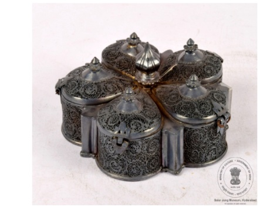

🔇 Is bhasha me is vastu ka audio abhi uplabdh nahi hai.
3. मसाला डिब्बा

अभिलेख संख्या: XLIV-50
आंशिक रूप से सुनहरी जड़ाई वाला फ़िलिग्री (जालीदार) मसाला डिब्बा, जो पाँच पंखुड़ियों वाले फूल के आकार में बना है। इसका निचला हिस्सा समतल है। मसाला डिब्बे में पाँच खंड हैं, प्रत्येक पर अलग ढक्कन लगा है, जिसमें कली के आकार का नॉब (हैंडल) है। तली पर एक अभिलेख उकेरा गया है, और ढक्कन में तीन नुकीले कुंडे हैं। चाँदी की फ़िलिग्री एक अत्यंत नाजुक और जटिल धातु-कला तकनीक है, जिसमें बारीक चाँदी की तारों को मरोड़कर कलात्मक रूप से जोड़ा जाता है। यह चाँदी की फ़िलिग्री मसाला डिब्बी तेलंगाना के करीमनगर की है। करीमनगर की चाँदी की फ़िलिग्री कला को हैदराबाद के निज़ामों के शासनकाल में संरक्षण प्राप्त था, और उस समय के रईस लोग भव्य कलाकृतियाँ बनवाते थे। करीमनगर सिल्वर फ़िलिग्री को 2007 में भौगोलिक संकेत (जियोग्राफिकल इंडिकेशन – GI) का दर्जा प्राप्त हुआ। करीमनगर की यह प्राचीन कला 19वीं सदी के मध्य काल से प्रचलित है।
3. Spice Box
Acc No: XLIV-50
A partly gilt filigree spice box made in the shape of a five-petalled flower. Its base is flat. The spice box has five compartments, each fitted with a separate lid carrying a bud-shaped knob. An inscription is engraved on the base, and the lid has three pointed catches. Silver filigree is an extremely delicate and intricate metalwork technique in which fine silver wires are twisted and joined artistically. This silver filigree spice box is from Karimnagar in Telangana. The silver filigree art of Karimnagar received patronage during the rule of the Nizams of Hyderabad, and the nobility of that time commissioned magnificent works of art. Karimnagar silver filigree was granted Geographical Indication (GI) status in 2007. This ancient art of Karimnagar has been practised since the middle of the 19th century.
3. సుగంధ ద్రవ్యాల పెట్టె
Acc No: XLIV-50
ఈ సుగంధ ద్రవ్యాల పెట్టె 19వ శతాబ్దం మధ్య భాగం నాటి తెలంగాణలోని కరీంనగర్కు చెందిన కళాఖండం. దీనికి బంగారు పూత వేయబడి, ఐదు రేకుల పువ్వు ఆకారంలో, ఫిలిగ్రీ పద్ధతిలో అందంగా చెక్కబడింది. దీని అడుగు భాగం చదునుగా ఉంది. ఈ పెట్టెలో ఐదు అరలు ఉన్నాయి, ప్రతి అరకూ మొగ్గ ఆకారపు గుండీతో కూడిన ప్రత్యేకమైన కీలు మూత ఉంది. మూతకు మూడు మొనలు ఉన్న తాళాలు ఉన్నాయి మరియు అడుగున ఒక శాసనం ఉంది. ఫిలిగ్రీ అనేది సన్నని వెండి తీగలను మెలితిప్పి, అలంకరణ కోసం ఉపయోగించే సున్నితమైన మరియు సంక్లిష్టమైన లోహపు పని సాంకేతికత. నిజాంల పాలనలో పోషించబడిన ఈ కరీంనగర్ వెండి ఫిలిగ్రీ కళకు 2007లో భౌగోళిక సూచిక హోదా లభించింది.
۳. مسالہ دان
Acc No: XLIV-50
یہ جزوی طور پر سنہری رنگ کی زردوزی مسالہ دان ہے، جو پانچ پنکھڑیوں والے پھول کی شکل میں تیار کیا گیا ہے۔ نیچے کا حصہ ہموار ہے۔ اس مسالہ دان میں پانچ خانے ہیں، اور ہر خانے پر الگ الگ قبضہ دار ڈھکن لگا ہوا ہے جس پر کمل نما نوک لگی ہوئی ہے۔ نچلے حصے میں تحریر موجود ہے اور ڈھکن پر تین نوکدار کنڈیاں موجود ہیں۔ چاندی کی زردوزی نہایت نفیس اور باریک دھات کے کام کی تکنیک ہے، جس میں باریک چاندی کی تاریں موڑ کر اور گھما کر پیچیدہ نقش و نگار تیار کیے جاتے ہیں۔ یہ چاندی کی زردوزی مصالحہ دان کریم نگر، تلنگانہ سے تعلق رکھتا ہے۔ کریم نگر کی چاندی کی زردوزی ایک قدیم فن ہے، جو حیدرآباد نظام کے دور میں عروج کو پہنچا جب نوابین نے نہایت تفصیل اور مہارت سے آراستہ فن پاروں کی سرپرستی کی۔ کریم نگر کی چاندی کی زردوزی کو سنہ 2007 میں جغرافیائی شناخت کے تحت قانونی تحفظ بھی حاصل ہوا ۔ یہ انیسویں صدی کے وسط سے تعلق رکھتا ہے۔
৩. মশলাদানি
Acc No: XLIV-50
পাঁচটি পাপড়িযুক্ত ফুলের আকৃতির আংশিক গিল্টি করা একটি রূপোর ফিলিগ্রি মশলাদানি। এর তলোদেশটি সমতল। মশলাদানিটিতে পাঁচটি খোপ রয়েছে, যার প্রতিটির আলাদা কব্জাযুক্ত ঢাকনা এবং কুঁড়ি আকৃতির নব রয়েছে। এর নিচের অংশে লিপি খোদাই করা আছে এবং ঢাকনায় তিনটি সূক্ষ্ম ল্যাচ বা খিল লাগানো। সিলভার ফিলিগ্রি বা রূপোর তারজালির কাজ হলো একটি অত্যন্ত সূক্ষ্ম এবং জটিল ধাতব কারিগরি কৌশল, যেখানে রূপোর সরু তারগুলিকে পাকিয়ে নকশা তৈরি করা হয়। এই রূপোর ফিলিগ্রি মশলাদানিটি তেলেঙ্গানার করিমনগরের। করিমনগরের সিলভার ফিলিগ্রি শিল্পটি হায়দ্রাবাদে নিজামদের শাসনামলে পৃষ্ঠপোষকতা পেয়েছিল এবং উচ্চবিত্ত বা অভিজাত ব্যক্তিরা এই ধরনের কারুকার্যময় শিল্পকর্ম তৈরির নির্দেশ দিয়ে থাকতেন। করিমনগর সিলভার ফিলিগ্রি ২০০৭ সালে বৌদ্ধিক সম্পত্তির অধিকার সুরক্ষা বা ভৌগোলিক নির্দেশক অর্থাৎ জি.আই. ট্যাগ লাভ করে। করিমনগর সিলভার ফিলিগ্রি হলো করিমনগরের একটি প্রাচীন শিল্প। এটি ১৯ শতকের মধ্যভাগে নির্মিত হয়েছিল।
3. મસાલિયું
Acc No: XLIV-50
આંશિક રીતે સોનાથી મઢાયેલું ફિલિગ્રી મસાલિયું પાંચ પાંદડીના ફૂલના આકારનું છે. તેનું તળિયું સમતળ છે. મસાલિયામાં પાંચ ખૂણા છે, દરેકમાં અલગ તેમાં જોડાયેલું જ ઢાંકણું છે અને તેના ઉપર કળીના આકારનું હાથિયો છે. તળિયે શિલાલેખ છે, ઢાંકણાં પર ત્રણ અણીવાળા કૂંટ છે. ચાંદીની ફિલિગ્રી એ અત્યંત નાજુક અને સૂક્ષ્મ ધાતુ કળા છે જેમાં બારીક ચાંદીના તારને વાળીને કોતરણી બનાવવામાં આવે છે. આ ચાંદીનું ફિલિગ્રી મસાલિયું તેલંગાણાના કરીમનગરનું છે. કરીમનગરની ચાંદીની ફિલિગ્રી એ હૈદરાબાદના નિઝામોના શાસનકાળમાં આશરો પામેલી કળા છે, જેમાં રાજવી અને આશ્રિતો ભવ્ય કારીગરીના નમૂનાઓ બનાવડાવતા હતા. કરીમનગરની ચાંદીની ફિલિગ્રીને 2007માં બૌદ્ધિક સંપત્તિ અધિકાર અથવા ભૌગોલિક સંકેતનો દરજ્જો મળ્યો હતો. કરીમનગરની ચાંદીની ફિલિગ્રી કળા પ્રાચીન છે અને તેનો ઉદ્ભવ 19મી સદીના મધ્યકાળથી માનવામાં આવે છે.
3. ಸ್ಪೈಸ್ ಬಾಕ್ಸ್
Acc No: XLIV-50
ಐದು ದಳಗಳ ಹೂವಿನ ಆಕಾರದಲ್ಲಿರುವ, ಭಾಗಶಃ ಚಿನ್ನದ ಲೇಪನವನ್ನು ಹೊಂದಿರುವ ಜಾಲರಿ ವಿನ್ಯಾಸದ ಸಾಂಬಾರ ಪದಾರ್ಥಗಳ ಪೆಟ್ಟಿಗೆಯ ಅದ್ಭುತ ಕಲಾಕೃತಿ ಇದು. ಇದರ ತಳಭಾಗವು ಸಮತಟ್ಟಾಗಿದೆ. ಈ ಪೆಟ್ಟಿಗೆಯು ಐದು ವಿಭಾಗಗಳನ್ನು ಹೊಂದಿದ್ದು, ಪ್ರತಿಯೊಂದಕ್ಕೂ ಕೀಲುಗಳನ್ನು ಅಳವಡಿಸಿದ ಪ್ರತ್ಯೇಕ ಮುಚ್ಚಳಗಳಿವೆ ಮತ್ತು ಪ್ರತಿ ಮುಚ್ಚಳವೂ ಮೊಗ್ಗಿನ ಆಕಾರದ ಹಿಡಿಕೆಯನ್ನು ಹೊಂದಿದೆ. ಇದರ ತಳಭಾಗದಲ್ಲಿ ಬರವಣಿಗೆಯಿದ್ದು , ಮುಚ್ಚಳದಲ್ಲಿ ಮೂರು ಚೂಪಾದ ಕೊಂಡಿಗಳನ್ನು ಅಳವಡಿಸಲಾಗಿದೆ. ಬೆಳ್ಳಿಯ ಫಿಲಿಗ್ರೀ ಅಥವಾ ಬೆಳ್ಳಿಯ ಜಾಲರಿ ಕೆಲಸವು ಅತ್ಯಂತ ಸೂಕ್ಷ್ಮವಾದ ಮತ್ತು ಸಂಕೀರ್ಣವಾದ ಲೋಹದ ಕರಕುಶಲ ತಂತ್ರವಾಗಿದ್ದು, ಇದರಲ್ಲಿ ತೆಳುವಾದ ಬೆಳ್ಳಿಯ ತಂತಿಗಳನ್ನು ತಿರುಚಿ ಸುಂದರ ವಿನ್ಯಾಸಗಳನ್ನು ಮಾಡಲಾಗುತ್ತದೆ. ಬೆಳ್ಳಿಯ ಫಿಲಿಗ್ರೀ ವಿನ್ಯಾಸದ ಈ ಕಲಾಕೃತಿಯು ತೆಲಂಗಾಣದ ಕರೀಂನಗರಕ್ಕೆ ಸೇರಿದೆ. ಕರೀಂನಗರದ ಬೆಳ್ಳಿಯ ಫಿಲಿಗ್ರೀ ಕಲೆಯು ಹೈದರಾಬಾದ್ ನಿಜಾಮರ ಆಳ್ವಿಕೆಯಲ್ಲಿ ಪೋಷಿಸಲ್ಪಟ್ಟ ಕಲಾ ಪ್ರಕಾರವಾಗಿದೆ, ಮತ್ತು ಅಂದಿನ ಗಣ್ಯರು ಇಂತಹ ವಿಸ್ತಾರವಾದ ಕಲಾಕೃತಿಗಳನ್ನು ವಿಶೇಷವಾಗಿ ಮಾಡಿಸುತ್ತಿದ್ದರು. ಇದು ಕರೀಂನಗರದ ಒಂದು ಪ್ರಾಚೀನ ಕಲೆಯಾಗಿದ್ದು, 2007 ರಲ್ಲಿ ಬೌದ್ಧಿಕ ಆಸ್ತಿ ಹಕ್ಕುಗಳ ರಕ್ಷಣೆ ಅಥವಾ ಭೌಗೋಳಿಕ ಸೂಚ್ಯಂಕ ಮಾನ್ಯತೆಯನ್ನು ಪಡೆದುಕೊಂಡಿದೆ. ಈ ಸುಂದರ ಕಲಾಕೃತಿಯು 19ನೇ ಶತಮಾನದ ಮಧ್ಯಭಾಗಕ್ಕೆ ಸೇರಿದೆ.
୩. ମସଲା ଡବା
Acc No: XLIV-50
ଆଂଶିକ ଭାବରେ ସୁନା ରଙ୍ଗରେ ଛାଉଣୀ ଦିଆଯାଇଥିବା, ଏହି ମସଲା ଡବାଟି ପାଞ୍ଚ ପାଖୁଡା ବିଶିଷ୍ଟ ଫୁଲ ଆକୃତି ପରି ଦେଖାଯାଇଥାଏ। ଏହାର ତଳ ଭାଗ ସମତଳ ଅଟେ। ମସଲା ବାକ୍ସରେ ପାଞ୍ଚଟି ଡବା ଦେଖିବାକୁ ମିଳିଥାଏ, ପ୍ରତ୍ୟେକ ଡବାରେ ପୃଥକ ଢାଙ୍କୁଣୀ ରହି ଅଛି ଏବଂ ଏହାକୁ ଧରିବା ପାଇଁ ଉପରେ ନବ୍ ତିଆରି ହୋଇଛି। ଢାଙ୍କୁଣୀର ତଳ ଭାଗରେ ଅକ୍ଷରଗୁଡ଼ିକ ଲିକ୍ଷିତ ଆକାରରେ ଦେଖିବାକୁ ମିଳିଥାଏ ଏବଂ ତିନୋଟି ସୂକ୍ଷ୍ମ ଲଚ୍ ରହିଛି। ରୂପା ଜାଲିରେ ନିର୍ମିତ ସୂକ୍ଷ୍ମ ଏବଂ ଜଟିଳ ଧାତୁକାର୍ଯ୍ୟ କୌଶଳ ଯେଉଁଥିରେ ପତଳା ରୂପା ତାରଗୁଡ଼ିକୁ ମୋଡ଼ି ଏହାକୁ ତିଆରି କରାଯାଇଅଛି। ଏହି ରୂପା ଜାଲି ବିଶିଷ୍ଟ ମସଲା ବାକ୍ସ ତେଲେଙ୍ଗାନାର କରିମନଗରରୁ ନିର୍ମିତ ହୋଇଅଛି। ହାଇଦ୍ରାବାଦରେ ନିଜାମଙ୍କ ରାଜତ୍ୱ ସମୟରେ କରିମନଗରର ରୂପା କାରୁକାର୍ଯ୍ୟ ପରି ଜଟିଳ କଳାକୃତିକୁ, ରାଜ୍ୟ ପୃଷ୍ଠପୋଷକତା ମିଳିଥିଲା ଏବଂ ଅଭିଜାତ ବର୍ଗର ଲୋକମାନେ ଏହାକୁ ପ୍ରଶଂସା କରିଥିଲେ। କରିମନଗର ରୂପା କାରିଗରୀକୁ 2007 ମସିହାରେ ବୌଦ୍ଧିକ ସମ୍ପତ୍ତି ଅଧିକାର ସୁରକ୍ଷା କିମ୍ବା ଭୌଗୋଳିକ ସୂଚକ ସ୍ଥିତିର ପ୍ରାଧାନ୍ୟ ପ୍ରଦାନ କରାଯାଇଥିଲା। ଏଠିକାର ରୂପା କାରିଗରୀ ବହୁ ପ୍ରାଚୀନ ପାରମ୍ପରିକ କଳା ଅଟେ। ଏହାର ଇତିହାସ ଉନବିଂଶ ଶତାବ୍ଦୀର ମଧ୍ୟଭାଗରୁ ଆରମ୍ଭ ହୋଇଥିଲା।
3. मसाला डिब्बा
अभिलेख संख्या: XLIV-50
आंशिक रूप से सुनहरी जड़ाई वाला फ़िलिग्री (जालीदार) मसाला डिब्बा, जो पाँच पंखुड़ियों वाले फूल के आकार में बना है। इसका निचला हिस्सा समतल है। मसाला डिब्बे में पाँच खंड हैं, प्रत्येक पर अलग ढक्कन लगा है, जिसमें कली के आकार का नॉब (हैंडल) है। तली पर एक अभिलेख उकेरा गया है, और ढक्कन में तीन नुकीले कुंडे हैं। चाँदी की फ़िलिग्री एक अत्यंत नाजुक और जटिल धातु-कला तकनीक है, जिसमें बारीक चाँदी की तारों को मरोड़कर कलात्मक रूप से जोड़ा जाता है। यह चाँदी की फ़िलिग्री मसाला डिब्बी तेलंगाना के करीमनगर की है। करीमनगर की चाँदी की फ़िलिग्री कला को हैदराबाद के निज़ामों के शासनकाल में संरक्षण प्राप्त था, और उस समय के रईस लोग भव्य कलाकृतियाँ बनवाते थे। करीमनगर सिल्वर फ़िलिग्री को 2007 में भौगोलिक संकेत (जियोग्राफिकल इंडिकेशन – GI) का दर्जा प्राप्त हुआ। करीमनगर की यह प्राचीन कला 19वीं सदी के मध्य काल से प्रचलित है।
3. സുഗന്ധവ്യഞ്ജന പെട്ടി
Acc No: XLIV-50
അഞ്ച് ഇതളുകളുള്ള പൂവിൻ്റെ ആകൃതിയിൽ നിർമ്മിക്കപ്പെട്ട, ഭാഗികമായി സ്വർണ്ണം പൂശിയ ഒരു വെള്ളി ഫിലിഗ്രി സുഗന്ധവ്യഞ്ജന പെട്ടിയാണിത്. ഇതിൻ്റെ അടിഭാഗം നിരപ്പായതാണ്. അഞ്ച് അറകളുള്ള ഈ പെട്ടിയുടെ ഓരോ അറയ്ക്കും മുകുളാകൃതിയിലുള്ള കുമിളകളോടു കൂടിയ വെവ്വേറെ മൂടികളുണ്ട്. പെട്ടിയുടെ അടിഭാഗത്ത് ലിഖിതങ്ങൾ കാണാം; മൂടികളിലാകട്ടെ മുനയുള്ള മൂന്ന് കൊളുത്തുകളും ഘടിപ്പിച്ചിരിക്കുന്നു.
അതിസൂക്ഷ്മമായ വെള്ളിനൂലുകൾ ഇഴപിരിച്ചെടുത്ത് സങ്കീർണ്ണമായ രൂപങ്ങൾ സൃഷ്ടിക്കുന്ന അതീവ ചാരുതയുള്ള ഒരു ലോഹനിർമ്മാണ കലയാണ് 'സിൽവർ ഫിലിഗ്രി'. തെലങ്കാനയിലെ കരിംനഗറിൽ നിന്നുള്ളതാണ് ഈ അമൂല്യമായ നിർമ്മിതി. ഹൈദരാബാദ് നിസാമുമാരുടെയും പ്രഭുക്കന്മാരുടെയും ഭരണകാലത്ത് ഏറെ പ്രോത്സാഹിപ്പിക്കപ്പെട്ടിരുന്ന ഒരു കലാരൂപമാണിത്. കരിംനഗറിലെ ഈ പ്രാചീന കലാരൂപത്തിന് 2007-ൽ ഭൗമസൂചിക പദവി ലഭിക്കുകയുണ്ടായി. ഈ നിർമ്മിതി പത്തൊൻപതാം നൂറ്റാണ്ടിൻ്റെ മധ്യകാലഘട്ടത്തിലേതാണ്.
അതിസൂക്ഷ്മമായ വെള്ളിനൂലുകൾ ഇഴപിരിച്ചെടുത്ത് സങ്കീർണ്ണമായ രൂപങ്ങൾ സൃഷ്ടിക്കുന്ന അതീവ ചാരുതയുള്ള ഒരു ലോഹനിർമ്മാണ കലയാണ് 'സിൽവർ ഫിലിഗ്രി'. തെലങ്കാനയിലെ കരിംനഗറിൽ നിന്നുള്ളതാണ് ഈ അമൂല്യമായ നിർമ്മിതി. ഹൈദരാബാദ് നിസാമുമാരുടെയും പ്രഭുക്കന്മാരുടെയും ഭരണകാലത്ത് ഏറെ പ്രോത്സാഹിപ്പിക്കപ്പെട്ടിരുന്ന ഒരു കലാരൂപമാണിത്. കരിംനഗറിലെ ഈ പ്രാചീന കലാരൂപത്തിന് 2007-ൽ ഭൗമസൂചിക പദവി ലഭിക്കുകയുണ്ടായി. ഈ നിർമ്മിതി പത്തൊൻപതാം നൂറ്റാണ്ടിൻ്റെ മധ്യകാലഘട്ടത്തിലേതാണ്.